Jak działa instalacja modyfikacji?
Chcesz zainstalować modyfikację, ale nie wiesz jak? To proste! Postępuj zgodnie z poniższą instrukcją lub obejrzyj poradnik na YouTube.
Aby zainstalować modyfikcję najpierw musisz ją pobrać na swoje użądzenie. Jeśli nie wiesz jak pobrać modyfikację zalecamy najpierw zapoznać się z poprzednim poradnikiem klikając tutaj.
Po pobraniu modyfikacji masz dwa sposoby na jej zainstalowanie poprzez naszą oficjalną aplikację CPMFR dedykoaną właśnie do instalacji modyfikacji. Aplikację pobierzesz klikając tutaj.
Pobierając i instalując modyfikację, automatycznie stajesz się członkiem naszej społeczności CPMFR!
Wymagania
Najnowsza wersja gry:
Car Parking Multiplayer musi być zaktualizowany do najnowszej wersji.
Oryginalna kopia gry:
Car Parking Multiplayer musi być zainstalowany ze Sklepu Play. Wersje z innych źródeł są często zmodyfikowane i nie posiadają oryginalnego szyfrowania plików.
Aplikacja CPMFR:
Aplikacja CPMFR jest konieczna, aby móc zainstalować modyfikacje do plików gry.
Aplikacja Shizuku:
Aplikacja Shizuku jest konieczna, aby aplikacja CPMFR mogła działać.
Pobrana modyfikacja:
Aby zainstaloać modyfikację musisz najpierw ją pobrać z naszej strony. Jeśli nie wiesz jak pobrać modyfikację zachęcamy do zapoznania się z tym poradnikiem.
Włączone opcje programisty:
Opcje programisty muszą być włączone, aby aktywować port ADB niezbędny do działania instalatora modyfikacji.
Konto gościa:
Aby zainstalować jakąkolwiek modyfikację musisz najpierw wylogować się ze swojego konta w Car Parking Multiplayer. Instalowanie modów na zalogoanym koncie grozi utratą wszystkich danych i dezaktywowaniem konta. Modyfikacje instalujesz na własną odpowiedzialność.
Opcje programisty
-
Przejdź do aplikacji Ustawienia, następnie przewiń na sam dół i wejdź w Telefon — informacje.
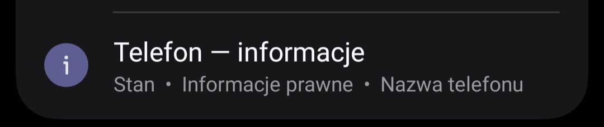
-
Następnie kliknij w Informacje o oprogramowaniu.

-
Teraz 7 krotnie kliknij w Numer wersji.
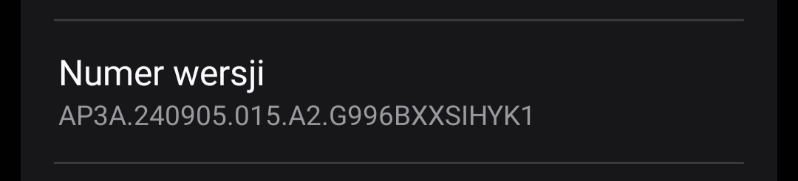
-
Wyświetli się komunikat. Zatwierdź klikając - OK.
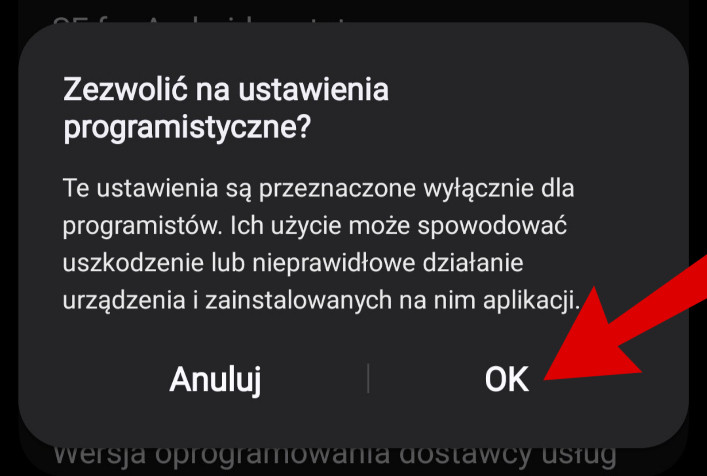
-
Opcje prograisty zostaną aktywowane. Znajdziesz je na samym dole w ustawieniach. Teraz przejdź do kolejnej części poradnika klikając tutaj.
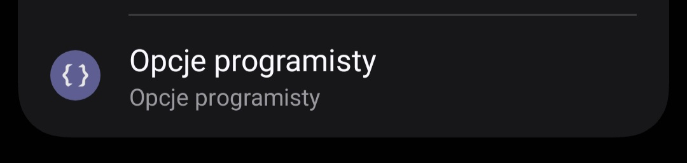
Konfiguracja Shizuku
Sposób 1 - (przez WI-FI)
-
Wysuń panel kontekstowy i połącz się ze swoją siecią WI-FI.


-
Uruchom aplikację Shizuku i kliknij przycisk Parowanie.
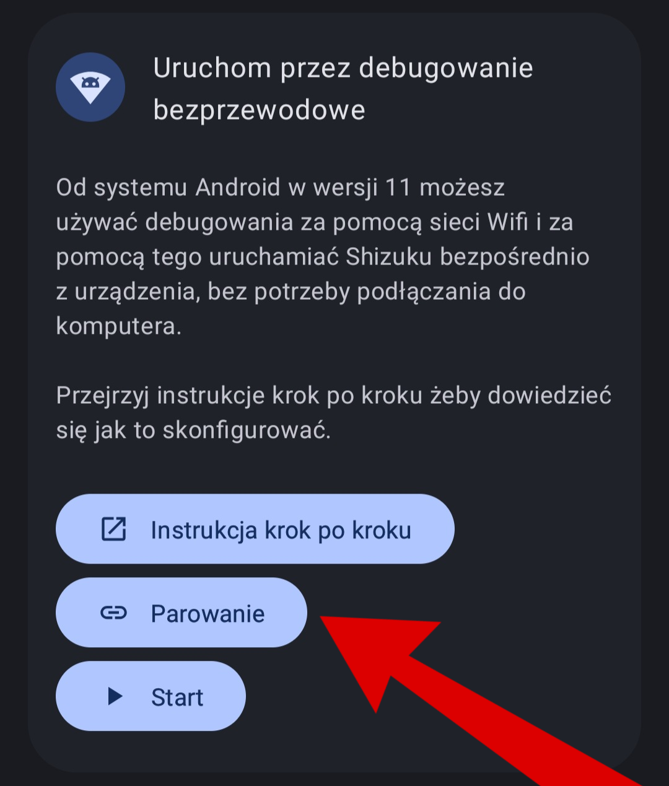
-
Teraz naciśnij przycisk Opcje developerskie.
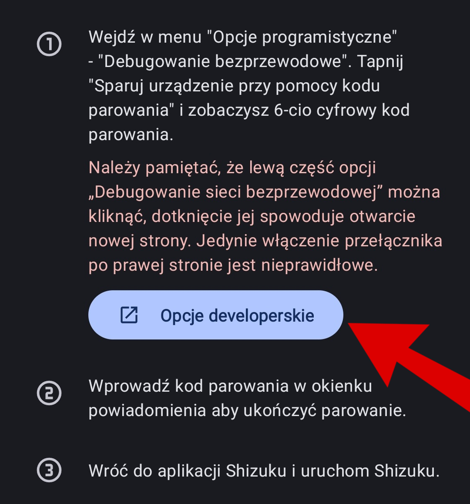
-
Zostaniesz przeniesiony do aplikacji ustawienia. Teraz zjedź do sekcji Debugowanie i kliknij bezpośrednio na zakładkę Debugowanie bezprzewodowe.
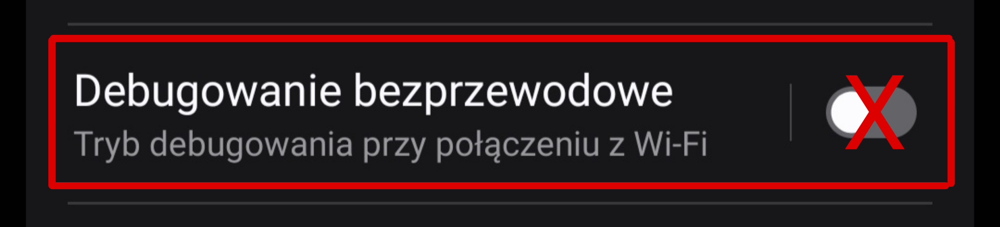
-
Teraz aktywuj opcję debugowania bezprzewodowego klikając na suwak.
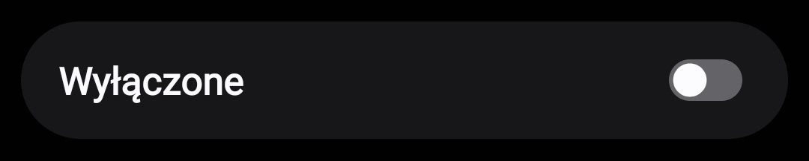 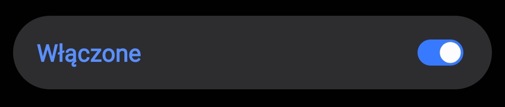
-
Pojawią się nowe opcje w panelu. Kliknij na opcję Sparuj urządzenie przy pomocy kodu parowania.
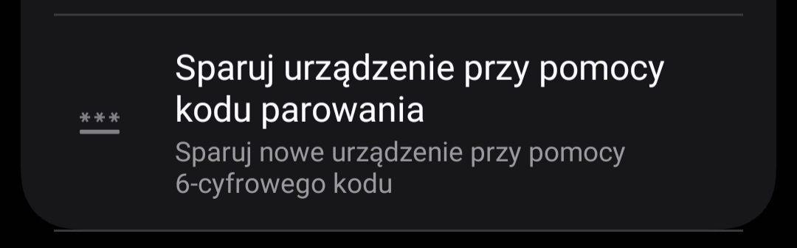
-
Wyskoczy nowe okno z wygenerowanym kodem parowania. Przepisz je lub zapamiętaj.
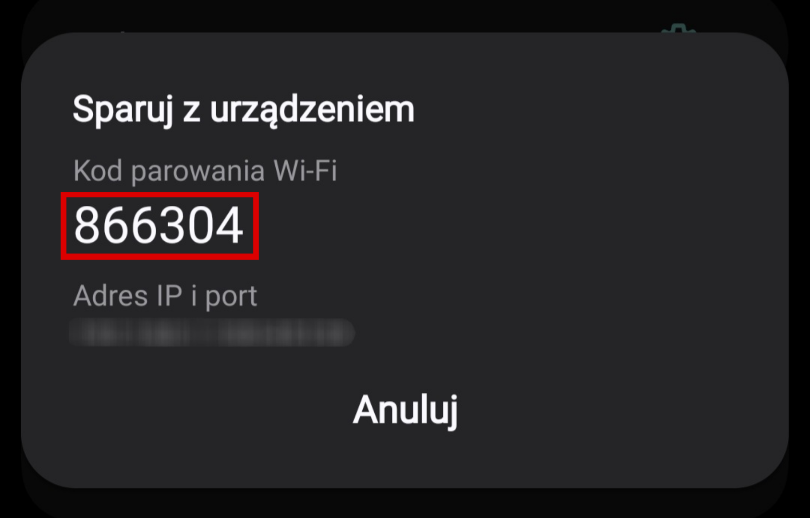
-
Wysuń panel kontekstowy. Będzie widniała tam etykieta Shizuku. Rozwiń jej szczegóły.
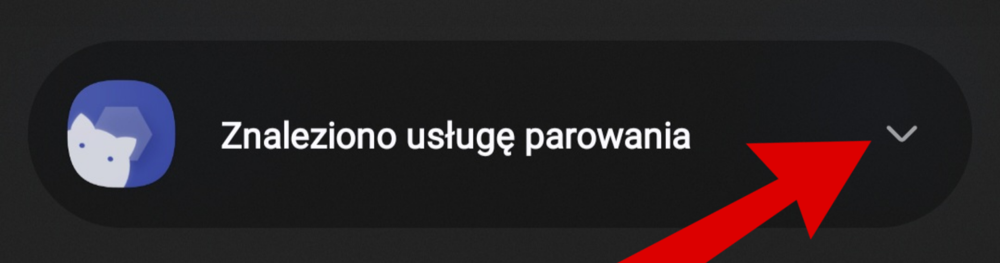A następnie kliknij Wprowadź kod parowania.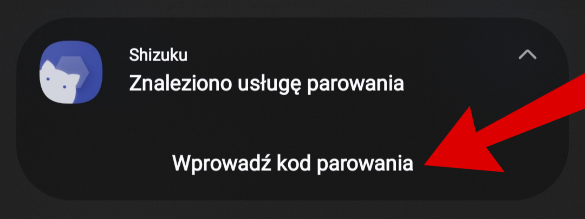
-
W polu wprowadzania kodów wpisz swój wygenerowany kod, a następnie kliknij Wyślij.
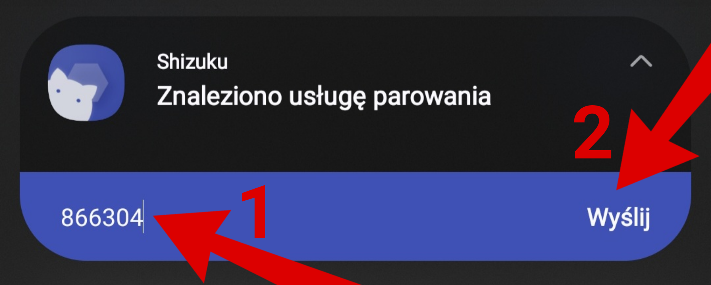
-
Po pomyślnym parowaniu usługi wróć do aplikacji Shizuku. Kliknij Start.
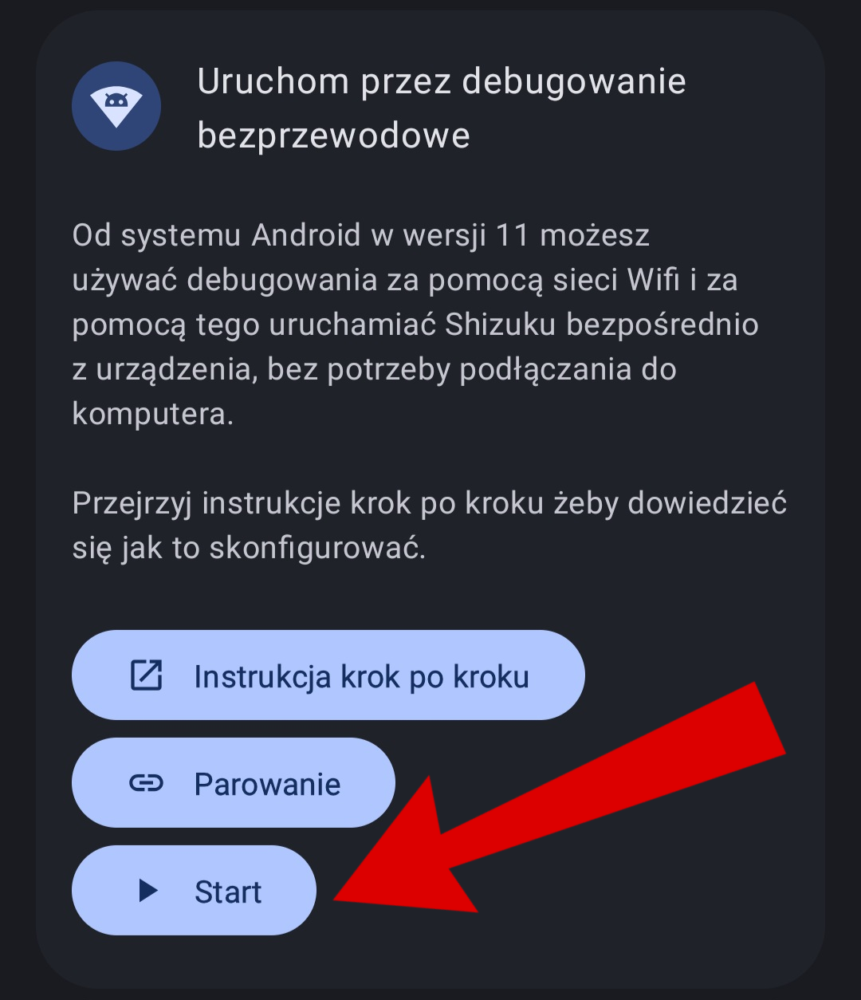Uruchomi się okno konsoli. Odczekaj kilka sekund, aż skrypt uruchomi ADB lokalnie. Nie wychodź teraz z aplikacji.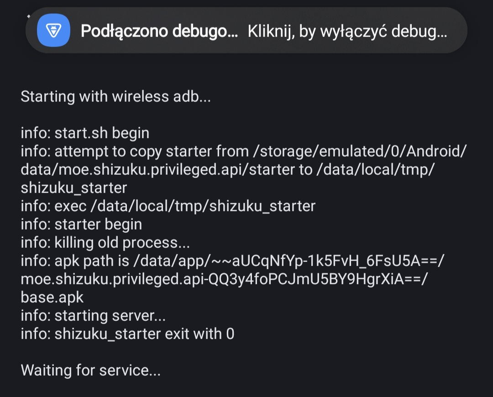
-
Kiedy skrypt się wykona cofnij się do karty głównej Shizuku. Zauważysz, że w zakładce będzie widoczna informacja - Shizuku działa.
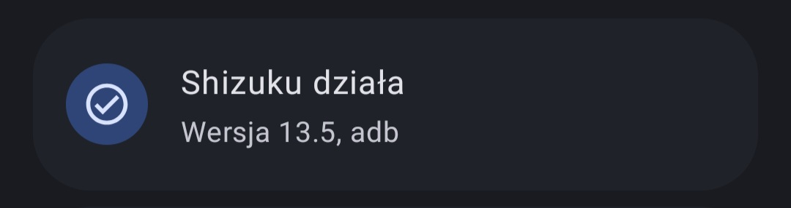Teraz możesz na spokojnie przejść do kolejnego poradnika klikając tutaj.
Sposób 2 - (przez komputer)
-
Na swoim komputerze odwiedź oficjalną stronę Platform tools i pobierz SDK na Windows.
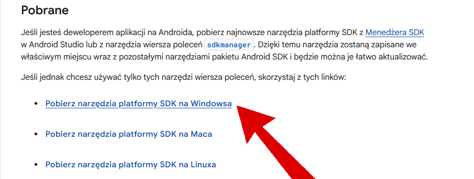
-
Pojawi się strona regulaminu. Przewiń ją na sam dół. Następnie zaakceptuj warunki i kliknij Pobierz.
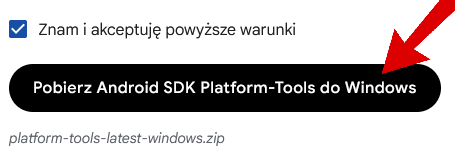
-
Zostanie pobrane archiwum zip. Otwórz je za pomocą WinRAR lub 7-Zip.
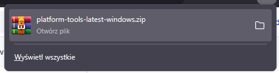
-
W archiwum znajduje się folder platform-tools. Zaznacz folder i skopiuj lub Ctrl+C.
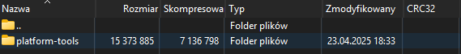
-
Przejdź do Ten komputer > Urządzenia i dyski > Dysk lokalny (C:)
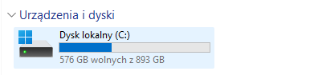
-
Na dysku lokalnym (C:) upuść lub wklej Ctrl-V skopiowany folder platform-tools bezpośrednio do katalogu głównego dysku (C:).
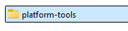
-
Zamknij wszystko. Teraz w pasku wyszukiwania Windows wyszukaj Edytuj zmienne środowiskowe.
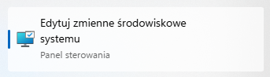
-
W nowym oknie kliknij przycisk Zmienne środowiskowe...
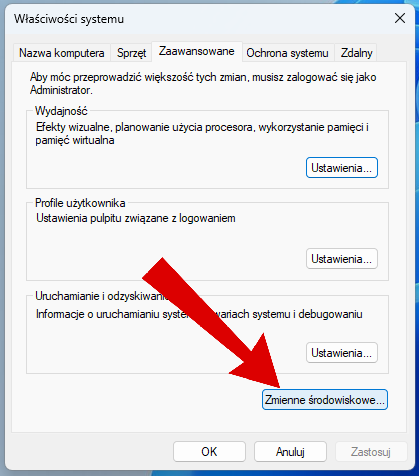
-
Zaznacz zmienną Path i kliknij w przycisk Edytuj...
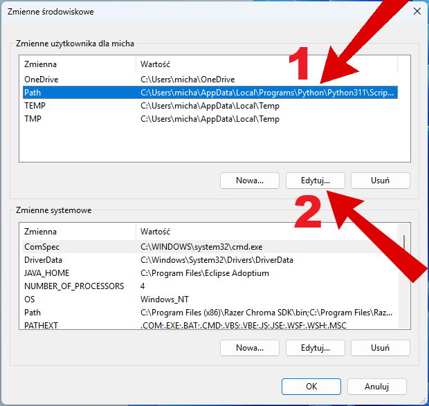
-
Kliknij Nowy i utwórz nową zmienną wpisując
C:\platform-tools. Po wpisaniu zatierdź zmiany i przeklikaj kolejno - OK.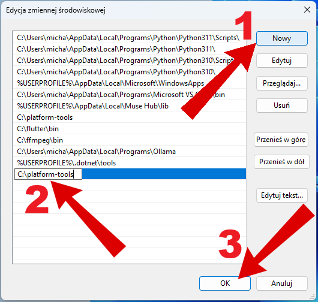 -
Teraz pobierz narzędzie Shizuku launcher. Po przejściu w podany link kliknij w niebieski przycisk pobierania.
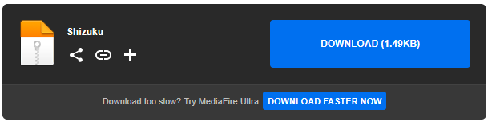
-
Zostanie pobrane archiwum zip. Otwórz je.
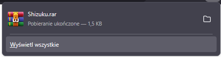
-
Po otwarciu przerzuć plik Shizuku.cmd na swój pulpit lub w inne miejsce na dysku.
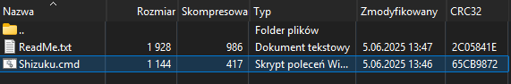
-
Uruchom skrypt wykonywalny Shizuku.cmd
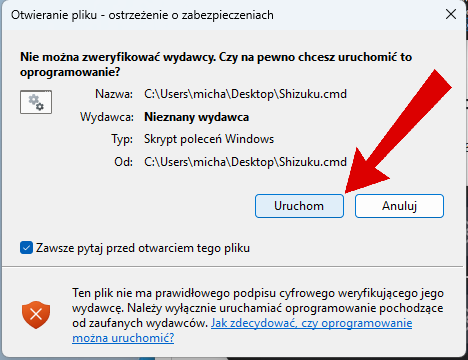Program poprosi Cię, abyś podłączył swój telefon do komputera za pomocą kabla USB.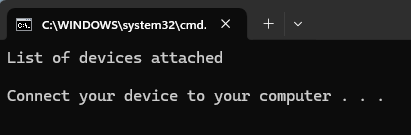
-
Na swoim telefonie przejdź do aplikacji Ustawienia, a nstępnie do Opcje programisty. Upewnij się, że opcje programisty wcześniej aktyowałeś. Jeśli nie przeczytaj poradnik.
-
Przejdź do sekcji Debugowanie i włącz Debugowanie USB.
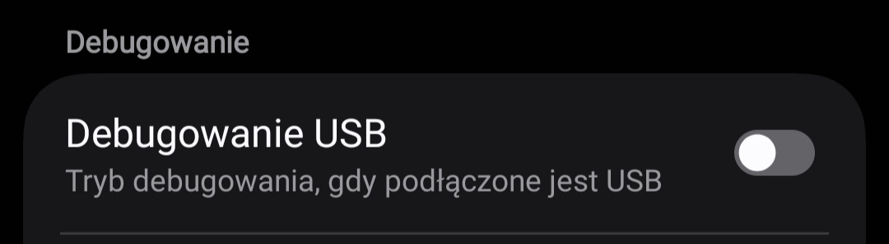 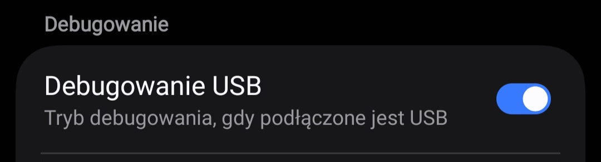
-
Skrypt poprosi Cię o zatwierdzenie klucza RSA.
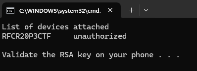Na twoim telefonie wyświetli się okno dialogowe klucza RSA. Kliknij Zezwalaj.Program wykona polecenie uruchamiające skrypt dla aplikacji Shizuku. Po wykonaniu skryptu możesz wszystko zamknąć.
 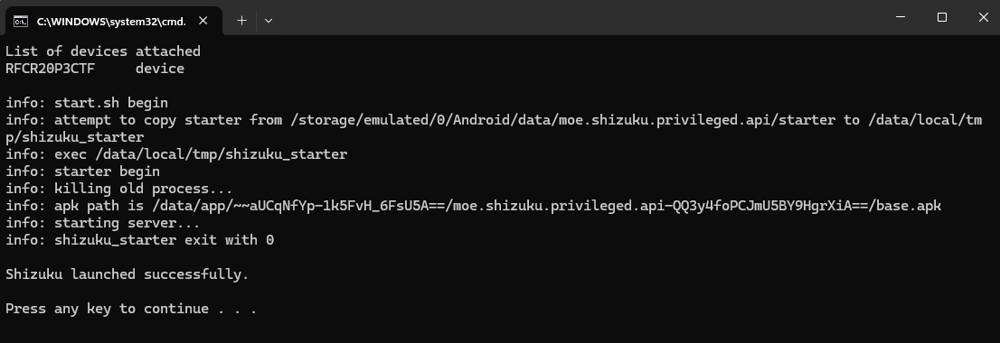
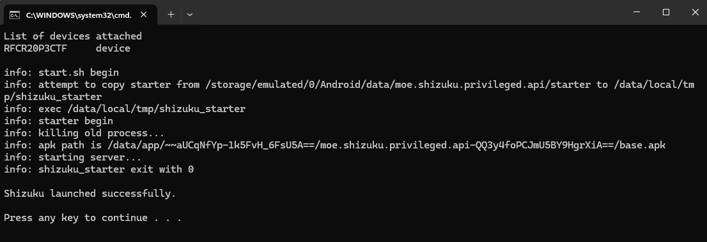 -
Uruchom na swoim telefonie aplikację Shizuku. Zobaczysz, że skrypt aplikacji został automtycznie uruchomiony!
Instalacja modyfikacji
-
Na samym początku musisz pobrać interesującą Cię modyfikację. Poradnik pobierania modyfikacji znajdziesz klikając tutaj.
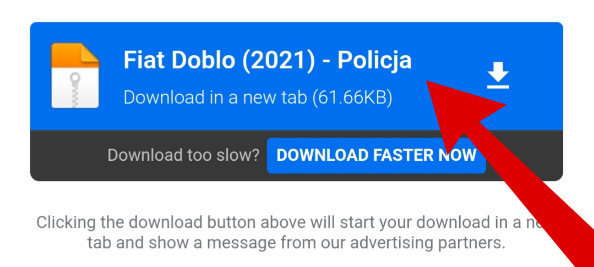
- Pobraną modyfikację znajdziesz w folderze Downloads jak na poniższym obrazku.
- Zainstaluj aplikację CPMFR jeśli jeszcze nie masz jej zainstalowanej klikając tutaj.
- Uruchom grę Car Parking Mupliplayer i wyloguj się ze swojego konta. Kliknij na ustawienia w lewym górnym rogu ekranu.
- Naciśnij na przycisk SAVE PROGRESS.
- Następnie kliknij na Sign out, aby wylogować się z konta. *PAMIĘTAJ SWOJE HASŁO!*
- Na domyślnym koncie gościa kup pojazd, fo którego pobrałeś modyfikację np. Fiat Doblo. Przejdź do Garage.
- Uruchom aplikację CPMFR i kliknij w niebeski przycisk Wybierz modyfikację.
- Zostanie uruchomiony systemowy menadżer plików. Przejdź do folderu Download lub tego w którym twoja modyfikacja została pobrna.
- Znajdź swoją pobraną modyfikację z listy plików i kliknij na jej etykietę.
- Modyfikacja zostanie wybrana i zostaniesz spowrotem przeniesiony do aplikacji. Teraz kliknij na żółty przycisk Przyznaj uprawnienia.
- Aplikacja Shizuku poprosi cię o przyznanie dostępu do aplikacji CPMFR. Kliknij w Zawsze zezwalaj.
- Aplikacja CPMFR poprosi cię o przyznanie uprawnień dla pakietu gry Car Parking Multiplayer. Kliknij Nadaj uprawnienia.
- Po nadaniu wymaganych uprawnień możesz zainstalować swoją modyfikację klikając na niebieski przycisk Zainstaluj modyfikację.
- Uruchom Car Parking Multiplayer i ciesz się swoją zainstalowaną modyfikacją!


To bardzo dobre pytanie! Dla tego wszystko wyjaśnimy w kolejnym poradniku. Aby przejśc do kolejnego poradnika kliknij tutaj.
Przenoszenie modyfikacji
-
Modyfikację masz zainstalowaną już na domyślnym koncie gościa jak w poprzednim poradniku. Teraz na drugim użądzeniu zainstaluj Car Parking Multiplayer. Następnie uruchom grę.
-
Po uruchomieniu gry na drugim urządzeniu kliknij na ustawienia w lewym górnym rogu ekranu.
-
Naciśnij na przycisk SAVE PROGRESS.
-
Kliknij na opcję SIGN IN i zaloguj się na swoje konto.
-
Po zalogowaniu się na swoje konto kliknij START.
-
Następnie przejdź do zakładki ONLINE GAME.
-
Teraz na pierwszym użądzeniu na tym gdzie posiadasz zainstalowaną modyfikację utwórz nową grę przechodząc tak samo przez: START > ONLINE GAME > ONLY FOR FRIENDS i utwórz pokój bez hasła.
-
Po dołączeniu do pokoju kliknij w menu opcji menu opcji.
-
Tutaj zobczysz po lewej stronie swoje ID gracza. Zapamiętaj je lub zapisz na kartce.
-
Teraz na drugim użądzeniu wpisz to ID do pola ENTER ID TO ADD... Po wprowadzeniu kliknij na START, aby dołączyć do utworzonego pokoju.

-
Po dołączeniu do pokouju na pierwszym użądzeniu wejdź do menu opcji.
-
Z listy graczy wybierz użytkownika z drugiego urządzenia, czyli na tym na którym jesteś zalogowany na swoje konto.
-
Naciśnij na SELL CAR, by sprzedać zmodyfikowany pojazd na swoje prawdziwe konto.
-
Kliknij w pole ENTER THE CAR PRICE.
-
Wymyśl jakąś małą cenę nie mniejszą niż 1,000$. Następnie kliknij CONFIRM.
-
Teraz na pierwszym użądzeniu kliknij na przycisk, który się wyświetlił.
-
Wyświetli się panel zakupu pojazdu. Kliknij zielony znacznik, aby potwierdzić zakup.
-
Po zakupie odczekaj około 10 sekund, aż komunikat zniknie. Następnie możesz opuścić serwer i cieszyć się swoją modyfikacją na swoim oficjalnym koncie!
Informacja wstępna:
Pobrana modyfikacja znajduje się już na domyślnym koncie gościa, jednak chcesz przenieść ją na swoje konto.
Do wykonania tego zadania potrzebujesz dwóch urządzeń z zainstalowaną grą Car Parking Multiplayer lub emulatora np. MEmu lub Bluestacks na swoim komputerze.
Na drugim urządzeniu zaloguj się na swoje konto w Car Parking Multiplayer. Następnie sprzedaj zmodyfikowany pojazd na to konto, na którym jesteś zalogowany z konta gościa. Po pomyślnym transferze pojazdu
zapisz zmiany i wyloguj się ze swojego konta.
Na koniec zaloguj się ponownie na swoje konto na głównym urządzeniu i ciesz się modyfikacją!
Jeśli nie posiadasz drugiego urządzenia, możesz również skorzystać z aplikacji
Multiple Accounts.
Wymagania:
1. Dwa urządzenia mobilne lub emulator.
2. Zainstalowana modyfikacja na koncie gościa